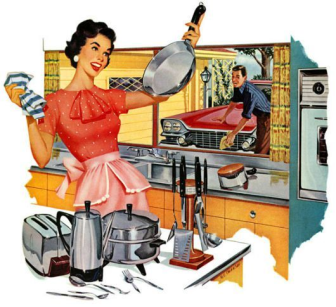
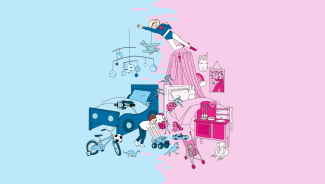

Emma Watson, une icône importante du féminisme

Née le 15 Avril 1990, Emma Watson, actrice engagée, Ambassadrice de bonne volonté d'ONU Femmes, est maintenant une figure importante du féminisme.
Lire l'article


Lycées ouvert aux femmes

Le féminisme est officiellement apparu dans la langue française à partir de 1837. C’est un sujet assez sensible visant à élargir les droits ainsi que le rôle des femmes. L'éducation a donc un rôle très important dans le féminisme car une femme sans culture, sans éducation, ne pourra jamais se tenir à égalité face à un homme.
L’école pour tous, un pas vers l’égalité
L’éducation des femmes a beaucoup évolué du XVIII° au XXI° siècles. En effet, au XVIII° siècles, l’enseignement était interdit aux femmes, ce qui avait pour répercussion qu’elles ne savaient ni lire, ni écrire, ni compter. À cette époque, les femmes restaient au foyer car elles avaient l’interdiction d’aller au lycée. Au XIX° siècle, les femmes étaient réduites à rester à la maison, leur rôle était d’être des mères, des épouses. C’est elles qui s’occupaient de la vie à la maison, de leurs enfants, de leur mari, elles vivaient uniquement pour leur cercle familial. Il était strictement interdit pour une femme de recevoir, d’assister à un cours scientifique car à l’époque, il était mal vu pour une femme d’être plus intelligente qu’un homme. Pendant longtemps les femmes ont été rabaissées par les hommes car elles étaient considérées comme inférieures. Ce n’est qu’en 1850 que l’enseignement devient autoriser pour les femmes avec la “loi Falloux” puis c’est un peu plus tard en 1882 que l’égalité des sexes dans l’enseignement est reconnu avec la “loi Ferry”
La place de la femme à l’époque
Les femmes jouent un rôle essentiel dans notre société, pour surmonter les défis auxquels nous sommes confrontés aujourd’hui. Cependant, cela n’a pas toujours été le cas. Dans les temps anciens, un mythe a perdurer disant que la femme n’a pas été crée en même temps que l’homme, mais à partir de l’homme.
Femme au foyer dans le temps
C’est sur ce mythe que les hommes se sont forgés une vision à l’égard des femmes : “la femme doit tout à l'homme, elle lui est soumise”, mais elle est aussi le symbole du malheur du genre humain. Jusqu’au XVIII° siècle, la femme resta évincée des droits civiques, leur droit de vote ne fut même pas soulevée lors de débats. Par les hommes, elles ne sont pas considérées comme de vrais individus, elles sont destinées à des tâches domestiques, des mères, des ménagères, loin de toutes ces fonctions sociales dont certaines rêvent tant.
Pour en savoir plus sur l’histoire de l’éducation des femmes, cliquez sur le bouton pour rejoindre la frise

Stéréotypes et discriminations, un combat sans fin
La parité dans l’accès à l’éducation ne date que de quelques générations mais l’égalité entre les hommes et les femmes reste inaboutie. En effet, malgré ces progrès, cette avancée vers l’égalité depuis ces dernières années, les femmes sont encore victimes de stéréotypes et de discriminations par rapport aux hommes. Les stéréotypes de genre constituent un obstacle pour fonder une véritable égalité entre les hommes et les femmes, ce sont en quelque sorte des “freins”. Pour faire simple, les stéréotypes sexistes peuvent freiner le développement des capacités intellectuelles naturelles que ce soit chez les filles et même chez les garçons. Ils peuvent également affecter leurs expériences en milieu scolaire, professionnelles voire même leurs chances dans la vie en général. Cependant, les femmes sont victimes de ces stéréotypes par les hommes pour maintenir leur “domination” historique envers elles et les empêchant également de progresser, de gravir les échelons.
Stéréotypes de genres
Nous pouvons en conclure que le droit d’éducation des femmes a beaucoup évolué durant les siècles. Les femmes aujourd’hui ont réussi à obtenir l’accès aux écoles, elles peuvent ainsi se cultiver et s’intégrer à notre société principalement dirigée par des hommes. Cependant, il existe encore des stéréotypes et des discriminations qui empêchent certaines femmes d’évoluer à leur plein potentiel.

LIRE AUSSI